심전도·뇌파·근전도·안전도를 직접 측정하고, 브라우저에서 바로 보고, 디지털 필터를 한 단계씩 만들어 보는 실습 키트입니다. 보드가 없어도 아래 뷰어는 합성 신호로 바로 동작합니다.
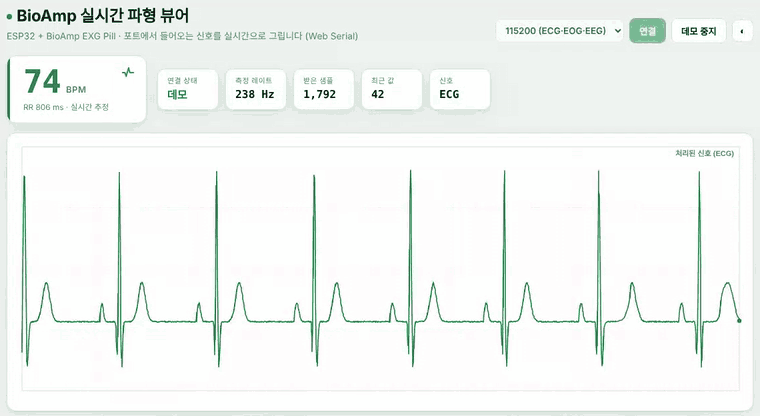
파일을 더블클릭하거나 이 페이지에서 바로 엽니다. 측정한 JSON을 끌어놓으면 그 데이터로 바뀝니다.
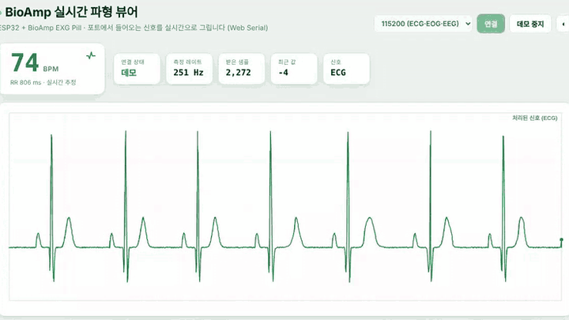
보드에서 들어오는 신호를 흐르는 그래프로. 실시간 BPM.
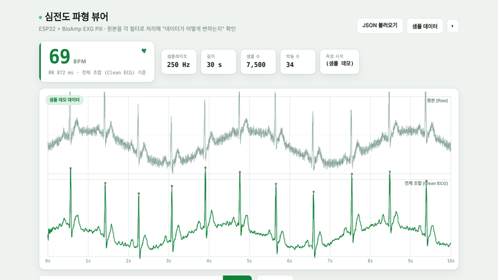
원본 → Median → HPF → Notch → FIR을 버튼으로 비교, R파 검출.
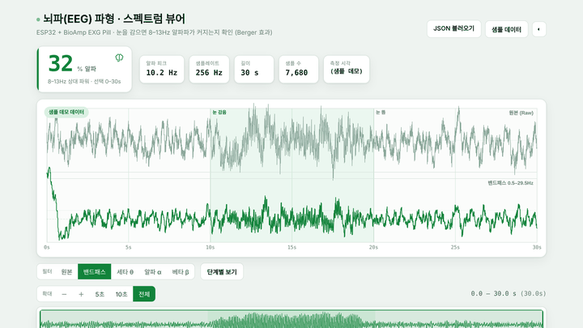
눈 감으면 커지는 알파파(Berger 효과), FFT 대역 파워.
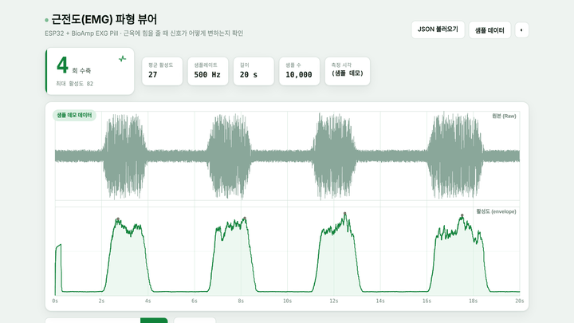
밴드패스 → 정류 → 활성도(envelope), 수축 횟수 세기.
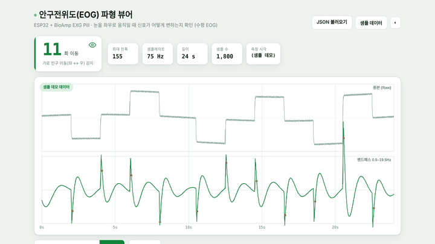
좌우 안구 이동을 펄스로 검출해 횟수 세기.
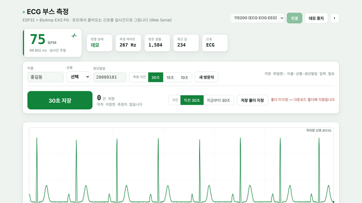
방문자별로 30초 측정·저장. 개인정보는 파일명에만, 서버 전송 없음.
디지털헬스케어시스템 수업 TA로 만든 코드입니다. 빈칸 스케치를 채우고, 파이썬으로 결과를 확인합니다.
| 주차 | 배우는 것 | 결과로 확인하는 것 |
|---|---|---|
| 5주차 시간 영역 필터 | 극성 확인 → 이동평균 → Median → Simple IIR → Median→IIR → 4단 종합 | 잡음은 줄이면서 R파를 얼마나 남기는지 (Median 78% · IIR 65% · 이동평균 51%) |
| 6주차 주파수 영역 필터 | HPF 0.5 Hz · Notch 60 Hz · FIR 51탭 계수를 gen_coef.py로 만들어 스케치에 붙여넣기 | 사인파를 일부러 섞어 넣고(INJECT_HZ) 실제 감쇠를 측정 |
| 9주차 근전도(EMG) | 1 kHz 체인: HPF 20 Hz → Notch → 정류 → MAV·RMS → 기저선 학습 → 히스테리시스 수축 검출, 2채널 | 수축 시작·놓침·오검출·지연, 노력 단계별 RMS 직선성, 근피로 중앙주파수(MDF) 감소 |
모두 합성 신호로 만든 그림입니다. 필터 계수는 스케치에 들어간 값을 그대로 읽어 계산했습니다.
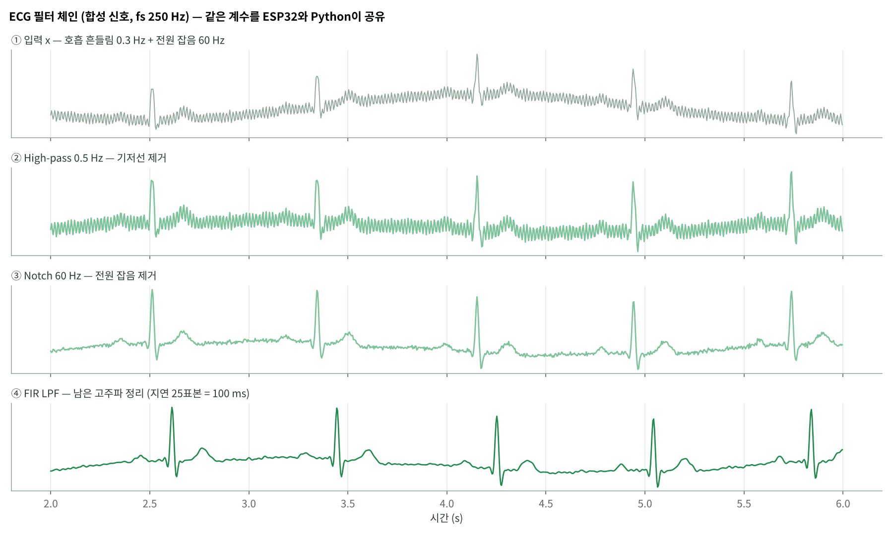
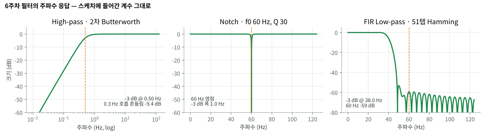
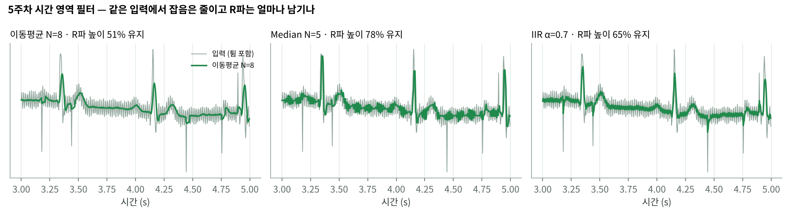
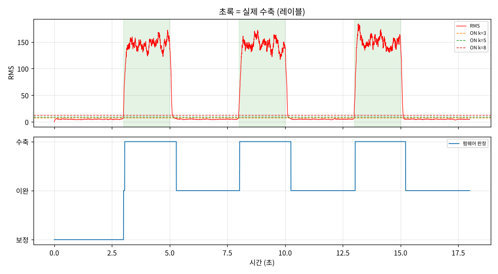
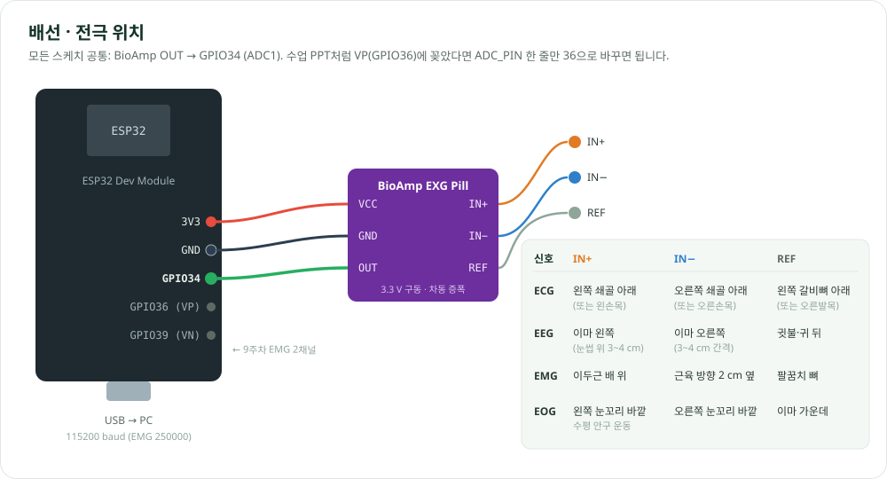